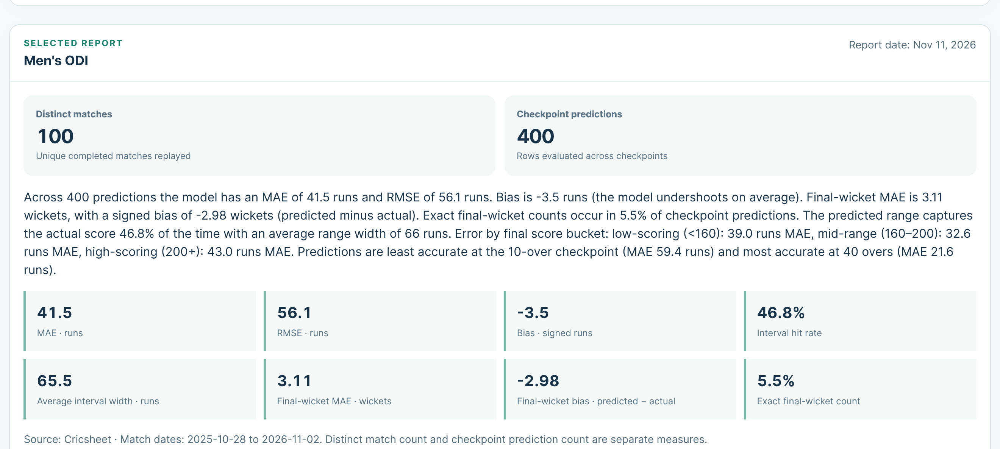
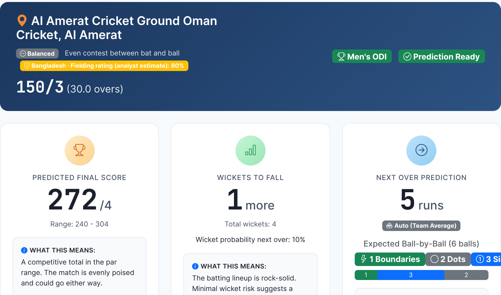

Fielding
How many runs is a dropped catch worth?
A diving stop on the boundary? No scoreboard tells you.
Dropped catch
Diving stop
CricPredict · fielding research
Why fielding matters
Fielding moves the score two ways
CHANCES
→ Wickets
- Dropped catch
- Missed run-out
- Run-out · Exceptional catch
RUNS SAVED
→ Runs
- Boundary save · Diving stop
- Ground fielding
- Misfield (extra runs)
Runs saved need no wicket. Even when nobody is out, good fielding changes the total.
CricPredict · fielding research
We tested our own fielding rating
Does it help? Not yet.
28.2
with the hand-assigned rating
vs
27.3
with it switched off
scale starts at zero
Run error (MAE), lower is better. Almost no difference, and the rating is slightly worse.
Why not just measure it?
Public data can't see most of fielding
RECORDED
✔ Catch taken✔ Run-out
NOT RECORDED
✖ Dropped catch✖ Misfield✖ Direct hit✖ Runs saved
Fielders are named only on successful dismissals. Catches and wickets alone mix up fielding with bowling and team quality.
Where the research stands
The tooling exists. The data doesn't.
✔ BUILT
Research tooling
- Player registry and ingestion
- Opportunity-adjusted estimates
- Shadow-mode comparison
- Not in production
✖ MISSING
Labelled fielding events
- Dropped chances
- Misfields · direct hits
- Runs saved
No validated fielding prediction exists yet.
If you hold fielding-event data
Let's compare notes.
A small sample dataset and its data dictionary is enough to start.
cricket-score-predictor.com
We publish our numbers
Our backtest is public
Men's ODI: the hardest format

The live product
Projection, range, explanation
SAMPLE SCENARIO · SYNTHETIC INPUTS, NOT A REAL MATCH

FIELDING TODAY
One hand-assigned team rating, labelled as an analyst estimate.